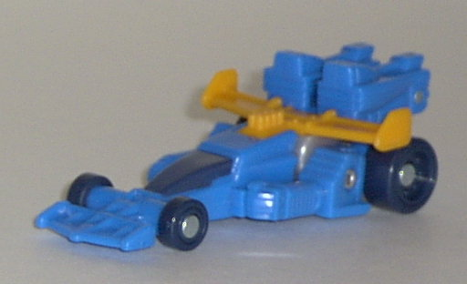
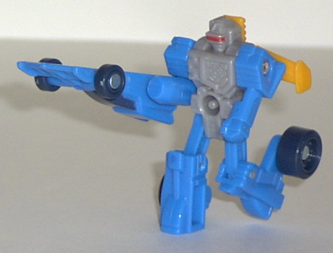
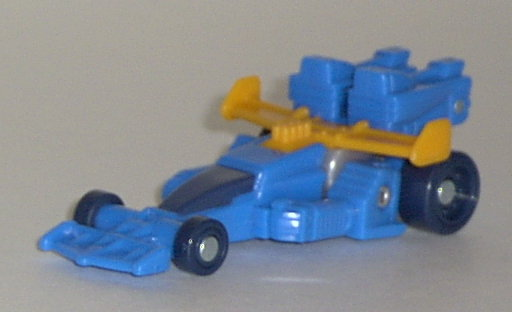
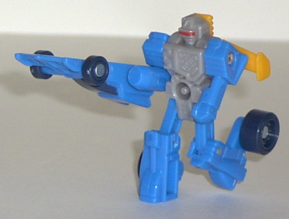
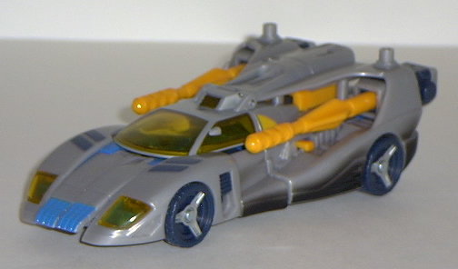
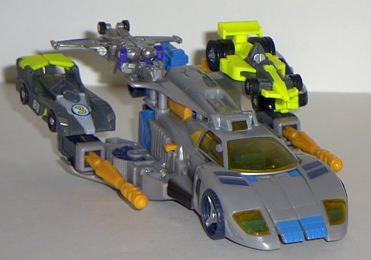
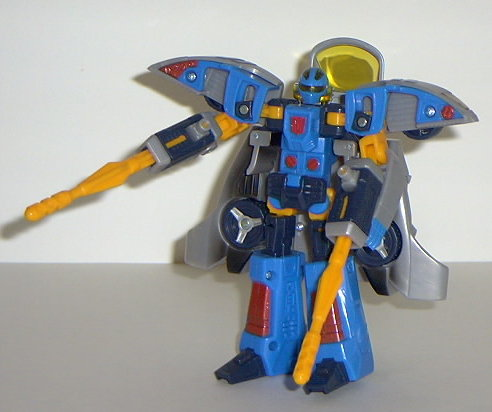

Incinerator
Incinerator
 
Allegiance : Minicon
Size: Mini-Con
Difficulty of Transformation : Very Easy
Color Scheme : Deep teal, dark gray-blue, light swirly gray, and some "cheese" yellow and sparkly red
Rating : 7.7
Incinerator


Allegiance
: Minicon
Size:
Mini-Con
Difficulty of Transformation
: Very
Easy
Color Scheme
: Deep teal, dark gray-blue,
light swirly gray, and some "cheese" yellow and sparkly red
Rating
: 7.7
Vehicle mode is a futuristic
dragster. This mode is pretty nice, with some excellent mold detailing
(although some more paint detailing besides just the window would have
been welcome). The colors also mesh together very well, although for some
reason, the deep teal came out looking much lighter than it actually is
in the pictures above. It's actually a much darker color than is shown.
My only real problem with this mode is that one of the robot fists is clearly
visible on one side of the window. But it wouldn't be that bad if the other
side didn't have a fist visible, so it's asymmetrical in a bad way. His
Minicon port is on the bottom, near the rear of the vehicle.
Incinerator's robot
mode is excellent, in practically every way except for (again) the lack
of good paint detailing, and the dragster front hanging off his right arm,
which isn't even disguised to look as anything. However, if you can ignore
that big thing hangin' off of him, than this is an almost perfect robot
mode. The mold detailing is excellent, as are the proportions- and although
the wheels on his feet look rather large compared to the appendages they're
attached too, they actually help his stability a lot. You can put him in
a running positon and he'll stay up! That's amazing! Incinerator also has
pretty good articulation for a Minicon- his hips, knees, shoulders, and
left elbow can move, and the latter has ball-joint articulation, to boot.
His Minicon symbol is on the left side of his chest.
Incinerator is an excellent
Minicon, so long as you ignore the kibble hanging off his right arm in
robot mode. Definitely one of the best.
 Blurr
Blurr


Allegiance
: Autobot
Size
: Super-Con
Difficulty of Transformation
: Medium
Color Scheme
: "Cheese" yellow, light
swirly gray, dark gray-blue, deep teal, and some sparkly red, silver, black,
and transparent amber
Powerlinx ports
: 4 (2 gimmicked)
Rating
: 8.4
Vehicle mode is a futuristic
race car, and MAN, is this mode cool. Just everything about it- the mold
detailing, the paint detailing, the streamlined look to it, the colors-
just fits together so perfectly. I mean, if I reviewed this toy just based
on the vehicle mode, it'd probably earn a 9.9- that's how freakin' cool
it is. There's no gas pipes in the back- just the soles of Blurr's feet,
which fit very well into the rest of the car anyway- but that's my only
complaint about this mode. One of the best TF vehicle modes ever, if not
THE best. I also especaily like the transparent headlights and the "scorch
marks" on the sides. Excuse me while I drool...
By sticking Incinerator
up the...er... rear... of the car, "wings" flip out from the side, and
you get a third "flight mode". (Or you could just flip them out yourself-
they aren't held to the car by much, even though they stay connected when
they're supposed to.) Y'know, for a third mode, this ain't really that
bad, either. The wings are servicable wings, and fit in with the sleek
look of the car. However, the missile launchers which are now revealed
tend to fall off a bit easier than I'd like. (Speaking of which, said missile
launchers are your basic Minicon-activated ones- attach a Minicon, push
forward, the missiles fire. Simple.) Not exactly a work of art, but not
bad, either.

Blurr's robot mode LOOKS
good- it has excellent paint and mold detailing, pretty nice proportions,
and a cool futuristic, sleek look to it- but it suffers from two very major
problems. First off, as you can see, the entire race car just practically
hangs off Blurr's back. And, it doesn't just hang right off the back, but
due to the construction of the toy- it actually hangs off his back a full
inch from his actual back. It's a bit hard to explain, but it looks really
odd from a side, view, let's just say that. Having all that weight back
there can lead to some stability problems, even with his long feet. It
also limits some of his movement. And this leads us to his other major
problem- his movement is VERY limited. In fact, all he can do is move his
head from side to side, his elbows front-to-back, and his legs front-to-back
or side-to-side at the hips. Nothing else. And, on top of this, his car
kibble on his back limits quite a bit of movement, too. And his leg movement,
although there, is all but useless. So you're basically just limited to
creating variants of "look one way while holding guns" poses with this
guy. Considering that the whole thing behind Armada is that the toys are
super-playable, this doesn't really help Blurr in this department. If only
he had some good articulation, he'd easily fit into the 9.0+ category...
Blurr has an excellent,
excellent vehicle mode, a decent "flight" mode, and a great-looking robot
mode. But the latter suffers from severe articulation and back kibble problems,
which is the only thing keeping him from achieving "must-buy" status. Still,
if you're anything but the stingiest Transformers buyer, he's still worth
a good look at in the store.
Review by Beastbot
Second Opinion by VBBN
Incinerator
Difficulty of Transformation
: Very
Easy
Rating
: 7.7
Incinerator's vehicle
mode is a dragster/racecar, from the front half at least. On most vehicles,
futuristic ones included, that have spoilers, they should be at the back.
Somehow, Incinerator got this, but also got a large brick added on to that.
It's a nice mode, and the fist on the side of the front doesn't bother
me, but the back half...just can't be passed as a booster or anything.
Incinerator's robot
mode is very nice. Firstly, I really like the dragster piece on his right
arm. Many hate it, but I think it's a massive blade, and on a minicon like
this, it works. His headsculpt is nice, very cyborg-like, and he has fairly
good articulation, including the knees. The spoiler looks decent here,
and I could see someone repainting this into
Hot
Rod
, just because of how the spoiler is situated on his back. That
mess of a back end in vehicle mode is overlooked to give this guy his great
legs, on the contrary. The wheels look bit fucky, I'm sure on a supersized
version of this they would fold back, and that would be very cool in the
least.
Blurr
Difficulty of Transformation
: Easy
Rating
: 9.0
Blurr's vehicle mode,
as Beastbot stated, is excellent. Very sleek and fast, and the only robot
extras visible on mine are thought the cockpit. The feet at the back mesh
very well with mine, as I gave it an ever so slight modification. The silver
is just silver plastic, needless to say it looks a bit dull and would look
FABULOUS in metallic silver paint, but it's an Armada toy, so go figure.
Blurr's robot mode,
is excellent as well, IMO. I don't mind the backpack to be honest. I mean,
G1 formers had shellformations, partsformations, and brick articulation,
and still everybody loves them to death, and the Pretenders are the biggest
case of a shellformation ever, yet again, we love them. In a way, I always
convince myself that this guy IS a G1 Transformer. Paint detailing is nice,
but the red looks bad on him. Very ninja like. The headsculpt is fast looking,
kind of like...well, I can't place it right now, but it makes me think
of something. Kinda like
Movie Jazz.
Articulation
isn't amzing, He has 360 at the head, up at the arms, two points in his
elboes, 360 at the legs and knees can bend backwards at the upper thoigh
on the balljoint.
One little hidden thing I found, is that
if you push on his backpack, his arms slam upward. Maybe you could get
some "ninja punching action" with that little bit.
In the end, Blurr and Incinerator are my favorite Autobots from the Armada Line next to the Deluxe Prime .